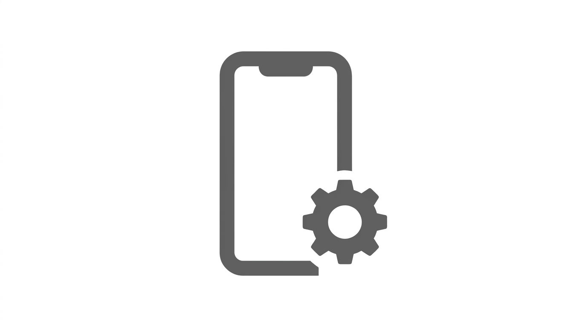

Mobile app development for Cursor, Claude Code, and MCP-compatible editors. 43 skills covering React Native/Expo and Flutter - project setup through app store submission, monetization, analytics, OTA updates, testing, CI/CD, animations, maps, i18n, forms, real-time, security, offline sync, background tasks, debugging, production monitoring, theming, feature flags, accessibility testing, native modules, config plugins, and SDK upgrades - plus 12 rules. Companion MCP server provides 36 tools.
| Name | Scope | Description |
|---|---|---|
| Mobile Accessibility | Flag accessibility anti-patterns in React Native and Flutter code. Catches missing accessibility labels, small touch targets, images without alt text, and color-only state indicators. | |
| Mobile Bundle Size | Flag large dependencies, unoptimized imports, and bloated assets that inflate the app bundle. Catches full-library imports when tree-shakeable alternatives exist, heavy packages with lighter replaceme | |
| Mobile Color Contrast | Flag insufficient color contrast, missing dark mode support, and non-semantic color usage | |
| Mobile Env Safety | Flag hardcoded production endpoints, database URLs, and service URLs that should differ between environments. Enforce EXPO_PUBLIC_ prefix for client-side environment variables. | |
| Mobile I18N Strings | Flag hardcoded user-facing strings that are not wrapped in a translation function. Catches strings in JSX text nodes and Flutter Text widgets that bypass the i18n layer. | |
| Mobile Image Assets | Flag oversized image assets, unoptimized formats, missing density variants, and uncached remote images in React Native/Expo projects. Prevents app bundle bloat and poor image performance. | |
| Mobile Native Compat | Flag deprecated native APIs, bridge-only module patterns, and New Architecture incompatibilities | |
| Mobile Performance | Flag common performance anti-patterns in React Native and Flutter code. Catches inline styles, missing list keys, unnecessary re-renders, missing const constructors, and heavy computation in build met | |
| Mobile Platform Check | Flag platform-specific React Native APIs used without Platform.OS or Platform.select() guards. Prevents runtime errors when code runs on the wrong platform. | |
| Mobile Secrets | Prevent committing mobile app secrets, API keys, signing credentials, or authentication material. Flag files containing sensitive patterns before they are committed. | |
| Mobile Security Audit | Flag common mobile security anti-patterns including insecure storage, missing SSL pinning, debug flags in release builds, cleartext traffic, and exposed signing credentials. | |
| Mobile Test Coverage | Flag untested components and screens, missing test files for new code, and low coverage thresholds in React Native/Expo and Flutter projects. |
| Name | Description |
|---|---|
| mobile_checkBuildHealth | Run build health checks: validate app.json, check dependencies, verify TypeScript, detect native issues |
| mobile_buildForStore | Create a production build for app store submission using EAS Build |
| mobile_analyzeBundle | Analyze app bundle for large dependencies, heavy assets, and optimization opportunities |
| mobile_configureOTA | Configure EAS Update for over-the-air JavaScript updates with runtime version policy |
| mobile_checkNativeCompat | Audit installed packages for New Architecture (Fabric/TurboModules) support |
| mobile_upgradeSDK | Detect current SDK version, compare to target, generate step-by-step upgrade plan |
| Name | Description |
|---|---|
| mobile_installDependency | Install a package using npx expo install for Expo compatibility with native module warnings |
| mobile_addPermission | Add a platform permission to an Expo project with iOS rationale string in app.json |
| Name | Description |
|---|---|
| mobile_checkDevEnvironment | Detect installed mobile development tools and SDKs (Node, Expo CLI, Watchman, Xcode, Android Studio, JDK) |
| mobile_runOnDevice | Step-by-step instructions for connecting a physical device to the Expo dev server |
| mobile_resetDevEnvironment | Nuclear reset for a stuck Expo dev environment: clear Metro cache, node_modules, .expo directory |
| Name | Description |
|---|---|
| mobile_addMap | Add a map view with provider config, location permissions, and marker support |
| mobile_addPushNotifications | Wire up push notifications: add plugin to app.json, create handler utility, configure Android channel |
| mobile_configureDeepLinks | Configure deep linking: scheme, Android App Links intent filters, iOS Universal Links |
| mobile_integrateAI | Scaffold AI API integration with provider config, error handling, and TypeScript types |
| mobile_setupRealtime | Add a real-time client module with connection management, event subscriptions, and reconnection |
| mobile_setupI18n | Initialize internationalization config with locale files and translation structure |
| mobile_setupFeatureFlags | Add a typed feature flag system with default values and remote sync (PostHog, LaunchDarkly, Firebase) |
| Name | Description |
|---|---|
| mobile_securityAudit | Scan for common security anti-patterns: insecure storage, missing SSL pinning, debug flags, credentials |
| mobile_profilePerformance | Analyze for performance anti-patterns: slow lists, unnecessary re-renders, inline styles, uncached images |
| mobile_auditAccessibility | Scan for accessibility violations: missing labels, small touch targets, images without alt text |
| mobile_checkOfflineReady | Validate offline-first readiness: local database, network status listener, query caching, mutation queue |
| mobile_setupMonitoring | Configure APM with Sentry Performance or Datadog RUM: error capture, tracing, breadcrumbs |
| mobile_setupTheming | Initialize a design token system with light/dark themes, semantic colors, spacing, typography |
| Name | Description |
|---|---|
| mobile_scaffoldProject | Generate a new Expo project using create-expo-app with the default or specified template |
| mobile_generateScreen | Create a new Expo Router screen file with navigation wiring and boilerplate |
| mobile_generateComponent | Create a React Native component file with typed props, StyleSheet, and optional test file |
| mobile_generateForm | Scaffold a validated form component with typed fields, validation rules, and error handling |
| mobile_createNativeModule | Scaffold an Expo Module or Flutter platform plugin with Swift/Kotlin stubs and bindings |
| mobile_generateTestFile | Scaffold a test file for an existing component or module with matching test boilerplate |
| Name | Description |
|---|---|
| mobile_validateStoreMetadata | Check that an Expo project has all required app store listing fields: name, bundle ID, icon, splash |
| mobile_submitToAppStore | Submit the latest iOS production build to App Store Connect via EAS Submit |
| mobile_submitToPlayStore | Submit the latest Android production build to Google Play Console via EAS Submit |
| mobile_generateScreenshots | Generate a screenshot capture helper script with required App Store and Play Store dimensions |
| Name | Description |
|---|---|
| mobile_runTests | Execute the project test suite (Jest for Expo, flutter test for Flutter) with structured results |
| mobile_setupCI | Generate a GitHub Actions CI workflow for build, test, and optional EAS Build deployment |
npm install -g @tmhs/mobile-mcpgit clone https://github.com/TMHSDigital/Mobile-App-Developer-Tools.gitcd Mobile-App-Developer-Tools/mcp-server && npm install && npm run build.cursor/mcp.json):{"mcpServers":{"mobile":{"command":"npx","args":["-y","@tmhs/mobile-mcp"]}}}expo-cli. For Flutter: install the Flutter SDK. The MCP tools detect your environment automatically.